Canadian Blood Services Annual Report. Credit: Vicky Tong
Thesis Inspiration
For my thesis I have decided to focus on the lack of individuals donating blood. I have done a lot of research on current stats of blood donaton and Canadian Blood Services as a whole. Currently, I am focussing on the end result, but I came across an interesting design for Canadian Blood Services' Annual Report.
This design includes a good layout and a key aspect that I need to include in my design, providing information while keeping the reader interested through graphics and colour.
Rough Blood Donation Research Posters.
Thesis Research Poster Progress
Part of the thesis project is creating a set of three posters displaying our research.
I have decided to focus my set of posters on three areas of the decline in blood donors. These posters are still a work in progress so they are still in black and white, and include boxes as placeholders for images.
The first poster is showing current facts and statistics on blood donors and donation. The second poster is focusing on why individuals aren't donating, and the third poster is displaying what Canadian Blood Services are currently doing to try and get blood donors.
Rough Blood Donation Illustrations.
Thesis Posters Rough Illustrations
These rough illustrations will be used on my thesis posters to add visual interest and emphasize the facts and information.
They were created in Procreate and will be cleaned up and finalized for the final version of the poster.
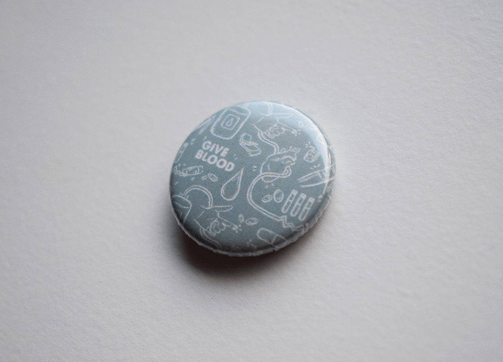
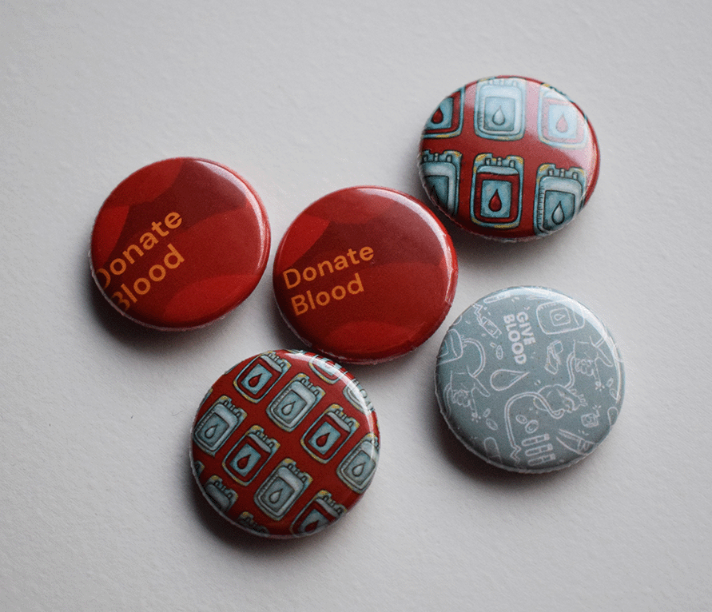
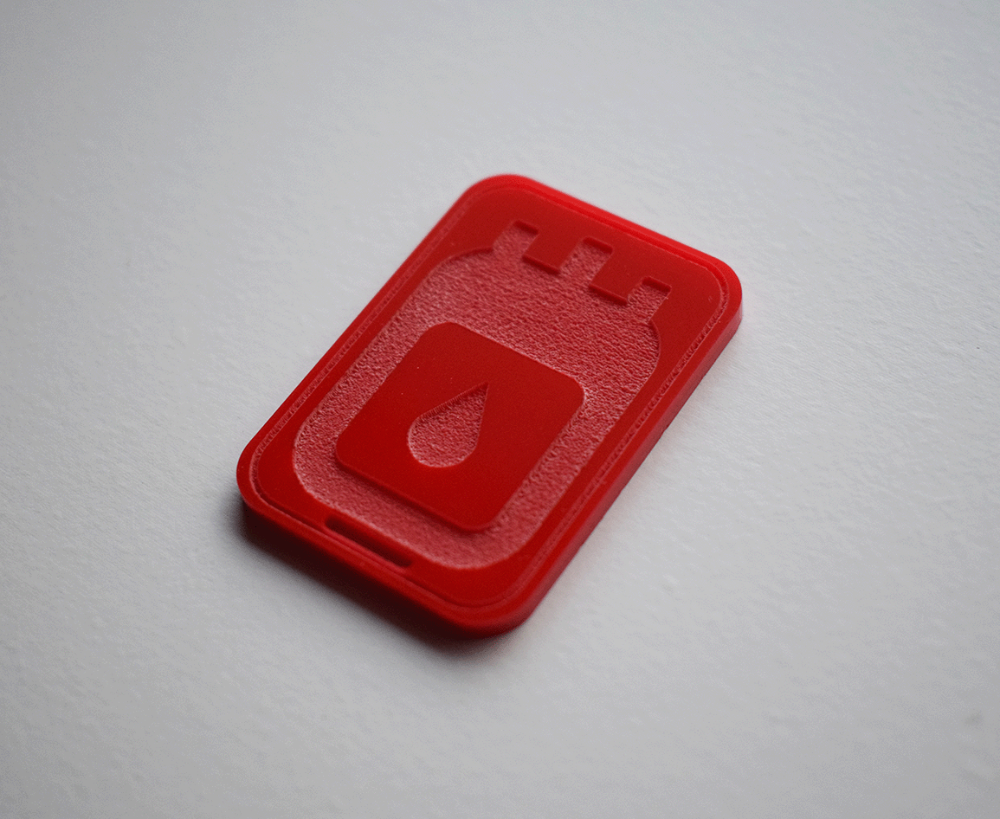
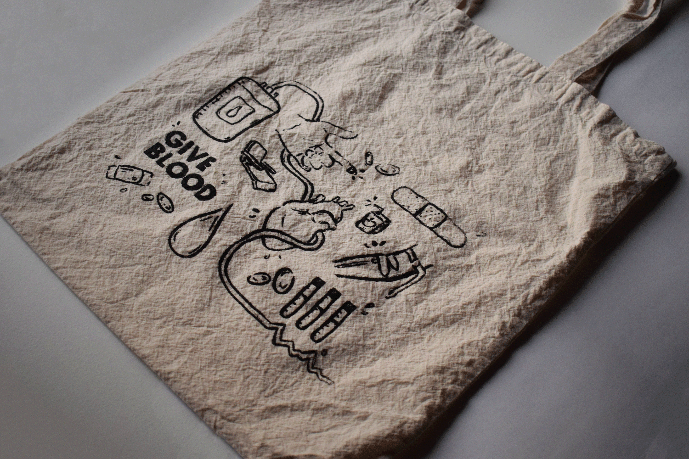
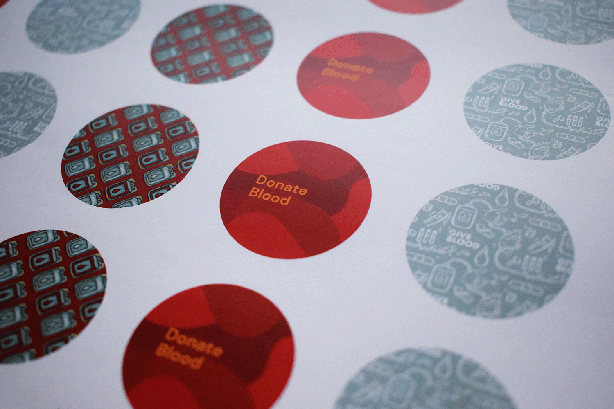
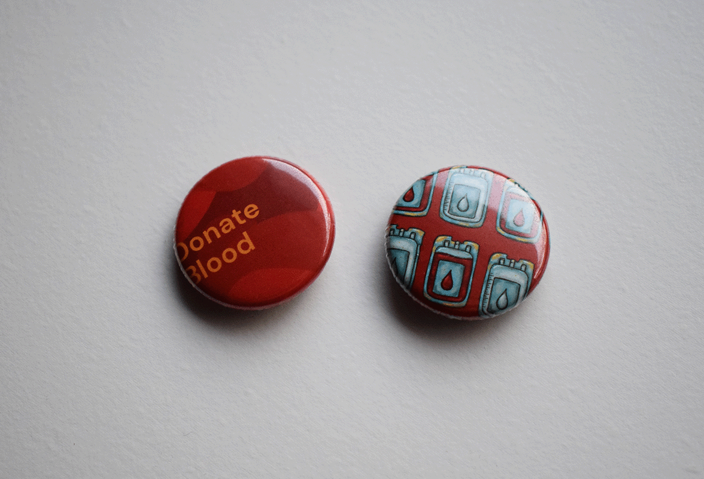
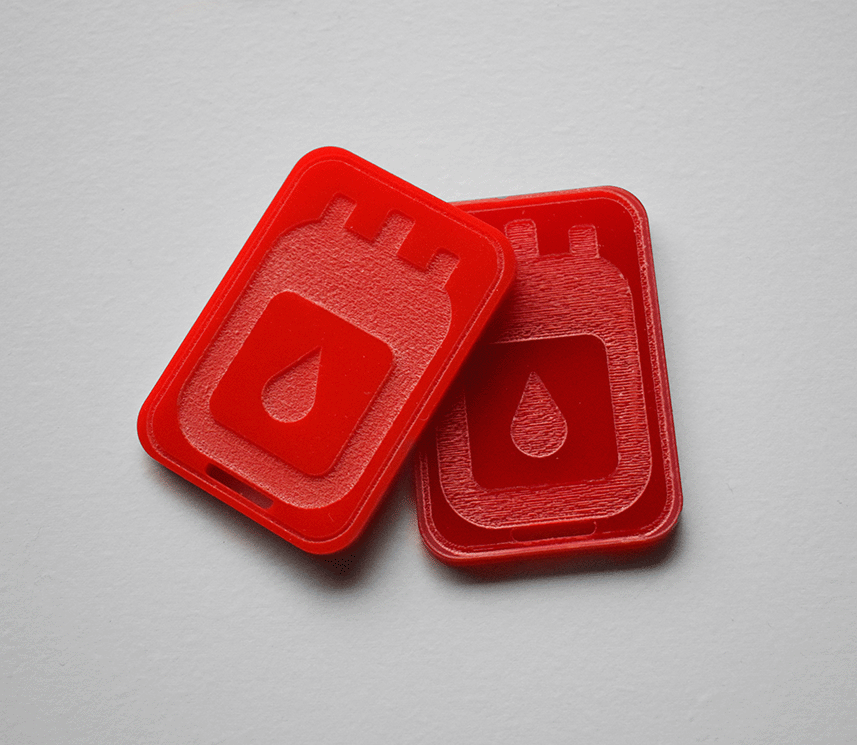
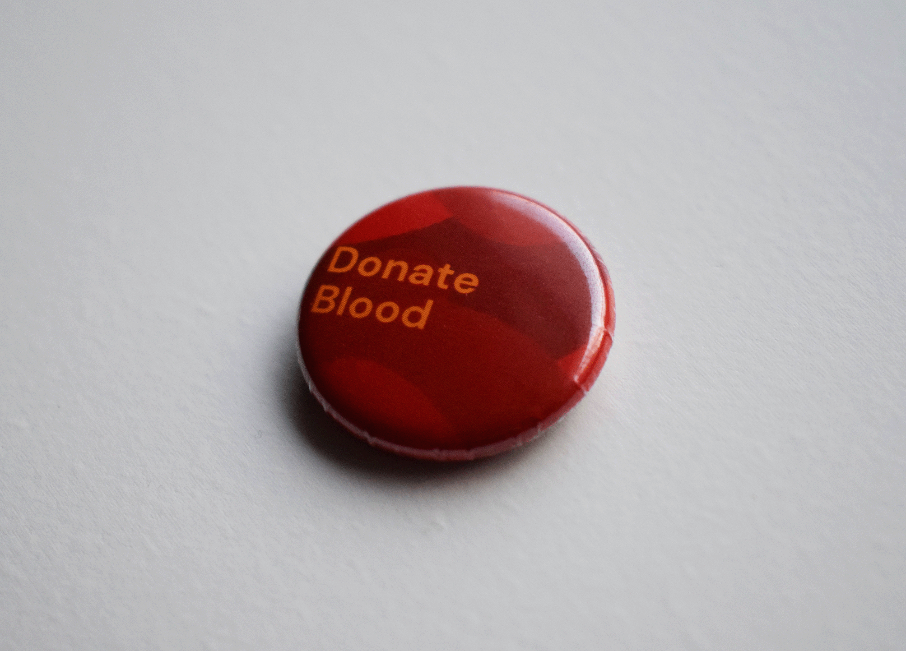
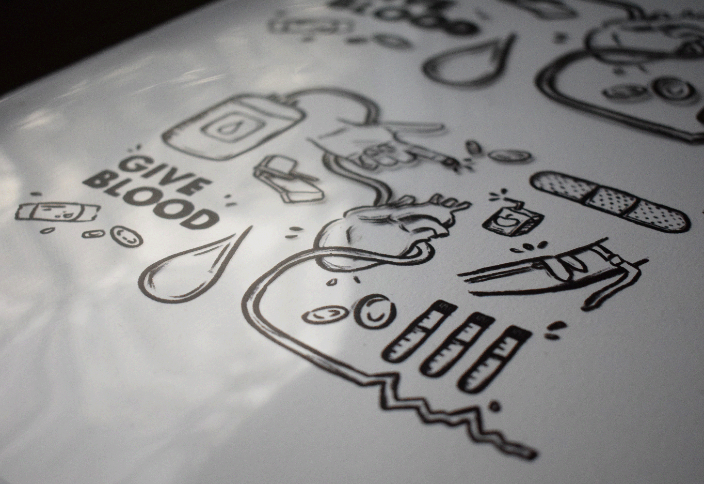
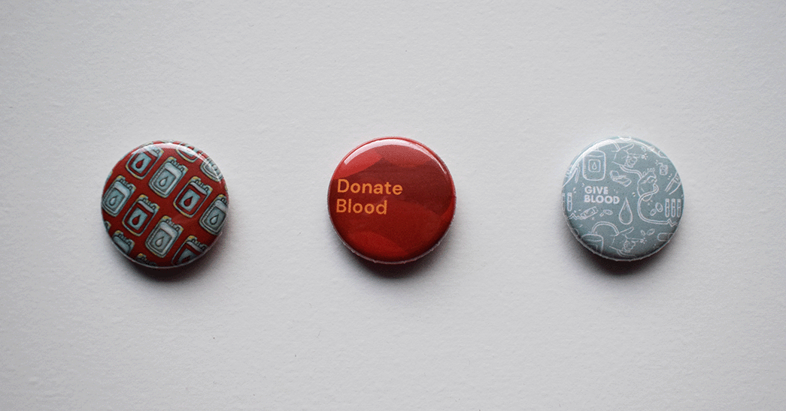
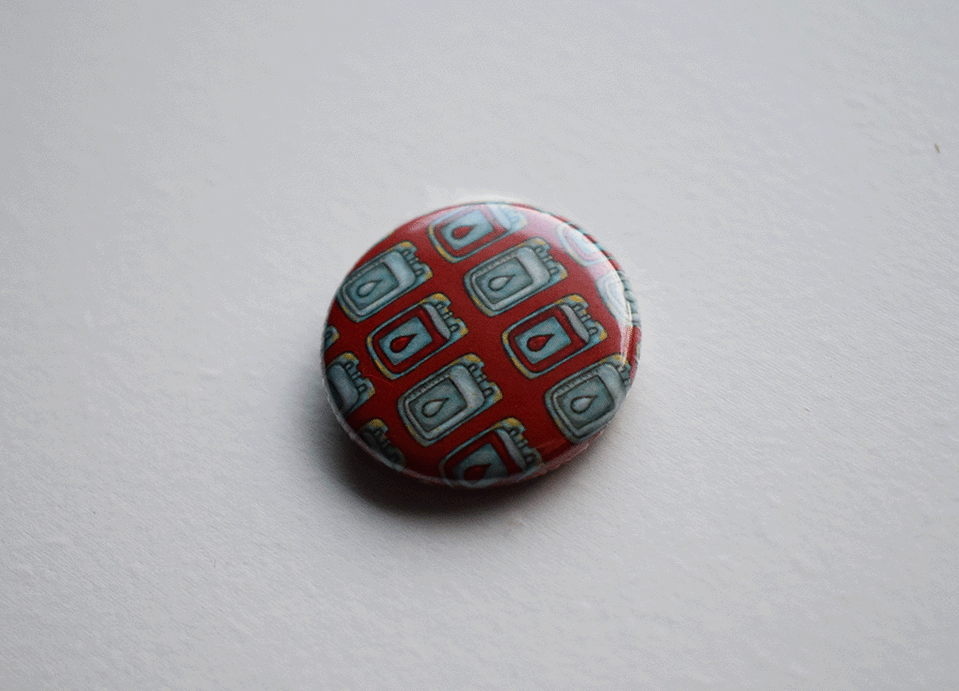
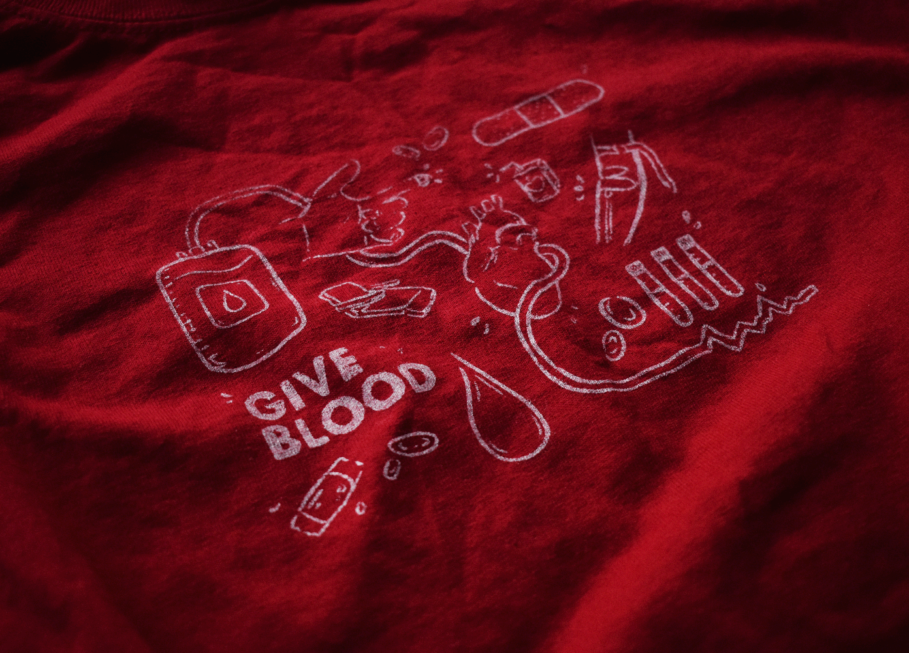
Photography of Exploring Various Forms of Media.
Exploring Different Medias for Thesis
These photos are of my exploration into my final design elements next semester.
I plan to create a care kit that includes a tote bag, a keychain and some buttons/pins to encourage blood donations. These are not the final designs, but simply exploring the different ways of producing these items.
Flowing Shapes in Various Colours.
Flowing Shapes
Here are some backgrounds that I designed for my thesis book. The idea of these shapes is to resemble or mimic blood without directly illustrating blood. This way it creates a connection between the designs and the message of donating blood.
I plan to use patterns and shapes like these in my designs for my thesis solution next semester.
Thesis Moodboard.
A Moodboard for my Thesis Project
This moodboard represents the overall feeling and design elements that will be incorporated into the final design solution.
With the use of: flowy, organic shapes, the combination of line drawings and blocks of colour, the use of mono-tone imagery, hand-drawn elements, and the incorporation of sketchy-texture.